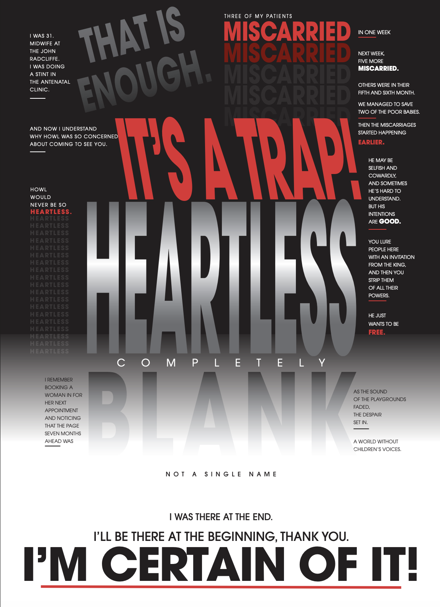

Strawberry Matcha
I used pink and green to introduce each flavor on its own before bringing them together in the cup. I animated the drink layers rising and the ice appearing so the viewer could see the drink come together before the tagline.
Welcome to my collection of creative work! Here you'll find projects showcasing my experience in web development, graphic design, editorial design, and motion graphics.
I combined three After Effects projects into a 19.5-second reel. A sweep of light takes the Matcha spot into the ATLUS reveal, and a wipe opens the Philadelphia scene.
I used pink and green to introduce each flavor on its own before bringing them together in the cup. I animated the drink layers rising and the ice appearing so the viewer could see the drink come together before the tagline.
I used red and blue diagonal bars to bring the logo colors into the frame before the wordmark appeared. For the reel, I extended the reveal to five seconds and animated the logo’s scale and fade so it had time to read.
I built the scene around a glossy green heart. I sent the eagle behind the heart and back into view to create depth, then let the curved white lettering settle so the welcome was easy to read at the end.
 Web Development
Web Development
A responsive wellness website designed to help users manage anxiety through breathing exercises, calming sounds, activity ideas, and supportive notes.
Skills used: HTML, CSS, JavaScript, responsive design, accessibility
 Graphic Design / UI Design
Graphic Design / UI Design
A mock storefront website for a fictional watchmaker, focused on layout design, branding, and navigation structure.
Skills used: HTML, CSS, layout design
 Web Development
Web Development
An interactive water-themed website featuring user engagement, responsive layouts, and front-end development techniques.
Skills used: HTML, CSS, JavaScript
 Web Development / Branding
Web Development / Branding
A photography portfolio website designed to showcase visual storytelling, photography collections, and a cohesive creative identity.
Skills used: HTML, CSS, responsive web design
 Editorial / Graphic Design
Editorial / Graphic Design
An editorial manifesto booklet exploring the importance of play, creativity, and self-expression. The project focuses on typography, visual hierarchy, composition, and multi-page publication design.
Skills used: Adobe InDesign, typography, editorial layout

Graphic DesignA publication design project focused on layout, visual hierarchy, and a cohesive typographic system.
Skills used: Adobe InDesign, typography, visual hierarchy
A motion graphics project featuring a growing loading screen animation.
A creative beverage advertisement focused on motion design, product presentation, and visual storytelling.
A Pokémon-themed animated stinger exploring motion, timing, and visual composition.
A motion graphics project centered around animated logo presentation and visual transitions.
A Philadelphia-themed motion graphics project exploring animated visual storytelling and creative composition.